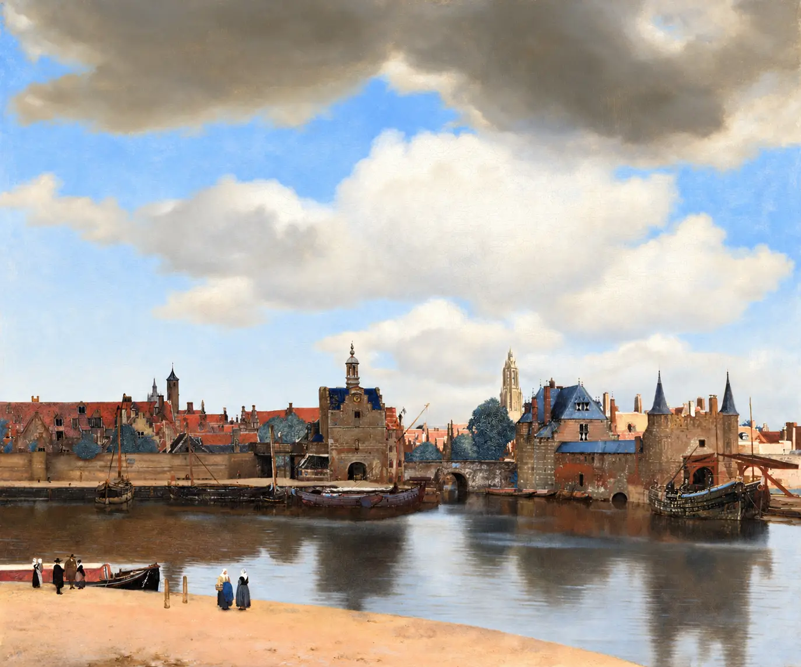
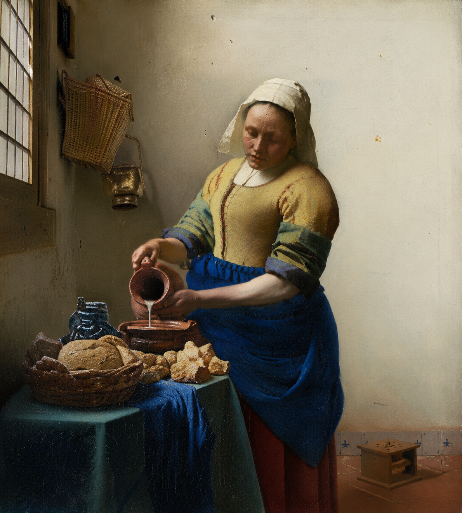

Panorama avec orientation
La Jeune Fille à la perle
Johannes Vermeer
Mauritshuis · The Hague
Explorer la vue du muséeARTDACI GEO · MUSEUM VIEW
Prolongez votre découverte d'une œuvre jusque dans les galeries où elle est conservée.
Johannes Vermeer
Mauritshuis · The Hague
Explorer la vue du musée
Johannes Vermeer
Mauritshuis · The Hague
Explorer la vue du musée
Vincent van Gogh
Musée d’Orsay · Paris
Explorer la vue du musée
Les liens et orientations ont été fournis pour les trois premiers tableaux. La Laitière ouvre la visite du deuxième étage du Rijksmuseum. L'accrochage actuel n'a pas été vérifié indépendamment.
ARTDACI GEO · MUSEUM VIEW
Continue your discovery of each artwork in the galleries where it is held.
Johannes Vermeer
Mauritshuis · The Hague
Explore the museum viewVincent van Gogh
Musée d’Orsay · Paris
Explore the museum viewLinks and camera orientations were provided for the first three artworks. The Milkmaid opens the Rijksmuseum second-floor tour. Current hanging has not been independently verified.
ARTDACI GEO · MUSEUM VIEW
واصل اكتشاف الأعمال الفنية داخل المتاحف التي تحتفظ بها.
Johannes Vermeer
Mauritshuis · The Hague
استكشف المشهد داخل المتحفتم تقديم روابط وزوايا العرض للأعمال الثلاثة الأولى، أما لوحة الحلابة فتفتح جولة الطابق الثاني من متحف ريكز. لم يتم التحقق بشكل مستقل من موقع العرض الحالي.